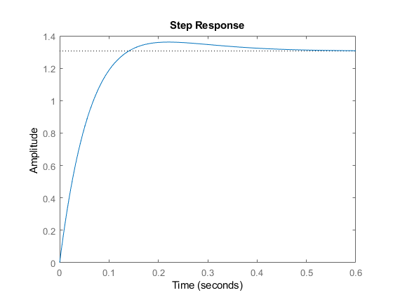
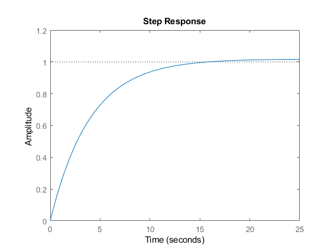

Contents
clc
clf
System constatnts
m1 = 0.25;
m2 = 1;
l = 0.5;
g = 9.8;
b = 0.05;
Start Problem 2
disp("Problem 2")
A = tf([1/m2],[1,b/m2,0]);
B = tf([-m1*g/m2],[1,b/m2,0]);
C = tf([2*b/(m2*l),0],[1,0,(-2*(m1+m2)*g)/(m2*l)]);
D = tf([-2/(m2*l)],[1,0,(-2*(m1+m2)*g)/(m2*l)]);
h1 = (B*D+A)/(B*C + 1);
h2 = (D*A + D)/(B*C + 1);
Hmimo = [h1;h2]
pole(Hmimo)
Problem 2
Hmimo =
From input to output...
s^8 + 0.1 s^7 - 88.2 s^6 - 8.82 s^5 + 1921 s^4 + 192.1 s^3
+ 4.802 s^2
1: -------------------------------------------------------------------
s^10 + 0.15 s^9 - 97.99 s^8 - 15.19 s^7 + 2400 s^6 + 384.1 s^5
+ 20.41 s^4 + 0.3602 s^3
-4 s^8 - 0.4 s^7 + 388 s^6 + 39 s^5 - 9211 s^4 - 940.8 s^3
- 9628 s^2 - 480.2 s
2: -------------------------------------------------------------------
s^10 + 0.1 s^9 - 147 s^8 - 15.19 s^7 + 7203 s^6 + 768.3 s^5
- 1.176e05 s^4 - 1.294e04 s^3 - 352.9 s^2
Continuous-time transfer function.
ans =
0
0
0
7.0050
7.0000
-7.0000
-6.9950
-0.0600
-0.0500
-0.0500
0
0
7.0000
7.0000
7.0050
-7.0000
-7.0000
-6.9950
-0.0600
-0.0500
Start Problem 5
disp("Problem 5")
a = -2/(m2*l);
b = -2*(m1+m2)*g/(m2*l);
P1 = tf([a],[ 1,0,b])
Kp1 = (160-b)/a;
Kd1 = 24/a;
C1 = tf([Kd1, Kp1],[1])
P1cl = feedback(C1*P1,1)
stepinfo(P1cl)
isstable(P1cl)
figure(1)
step(P1cl)
Problem 5
P1 =
-4
--------
s^2 - 49
Continuous-time transfer function.
C1 =
-6 s - 52.25
Continuous-time transfer function.
P1cl =
24 s + 209
----------------
s^2 + 24 s + 160
Continuous-time transfer function.
ans =
struct with fields:
RiseTime: 0.0916
SettlingTime: 0.3557
SettlingMin: 1.1870
SettlingMax: 1.3613
Overshoot: 4.2155
Undershoot: 0
Peak: 1.3613
PeakTime: 0.2187
ans =
logical
1

Start Problem 7
disp("Problem 7")
q = g*a*Kp1;
d = a*Kp1 + b;
H0 = tf([a*Kp1],[a*Kp1+b]);
P2 = tf([g],[ 1,0,0]);
P2ol = H0*P2
Kp= 0.0001;
Kd = 0.02;
C2 = tf([Kd,Kp],[1])
P2cl = feedback(C2*P2ol,1)
stepinfo(P2cl)
isstable(P2cl)
figure(2)
step(P2cl);
Problem 7
P2ol =
2048
-------
160 s^2
Continuous-time transfer function.
C2 =
0.02 s + 0.0001
Continuous-time transfer function.
P2cl =
40.96 s + 0.2048
--------------------------
160 s^2 + 40.96 s + 0.2048
Continuous-time transfer function.
ans =
struct with fields:
RiseTime: 8.1253
SettlingTime: 12.9687
SettlingMin: 0.9027
SettlingMax: 1.0173
Overshoot: 1.7296
Undershoot: 0
Peak: 1.0173
PeakTime: 31.7505
ans =
logical
1

Start Problem 10
disp("Problem 10")
HTZr = minreal((C1*C2*P2)/(C1*C2*P1*P2+C1*P1+1))
isstable(HTZr)
HZZr = minreal((C1*C2*P1*P2)/(C1*C2*P1*P2+C1*P1+1))
isstable(HZZr)
Problem 10
HTZr =
-1.176 s^5 - 18.48 s^4 - 14.16 s^3 + 905.1 s^2 + 3517 s + 17.56
---------------------------------------------------------------
s^5 + 31 s^4 + 332.7 s^3 + 1194 s^2 + 287.1 s + 1.434
Continuous-time transfer function.
ans =
logical
1
HZZr =
4.704 s^2 + 40.99 s + 0.2048
-------------------------------------------
s^4 + 24 s^3 + 164.7 s^2 + 40.99 s + 0.2048
Continuous-time transfer function.
ans =
logical
1